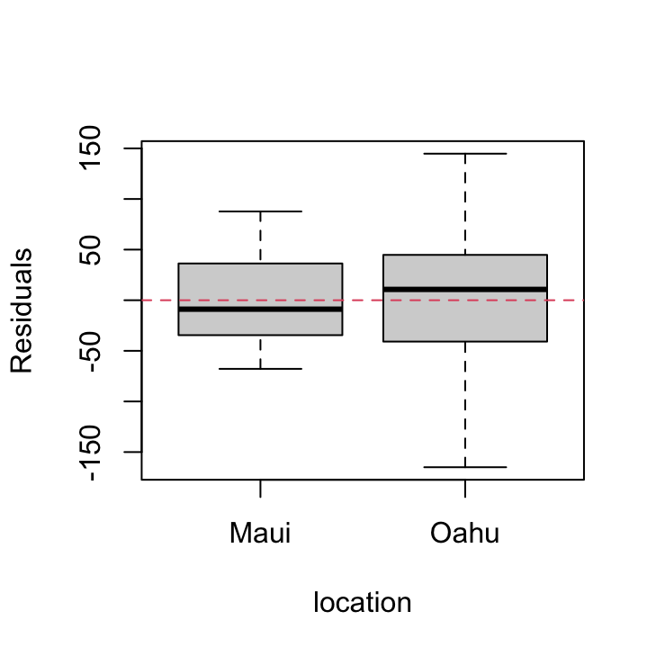
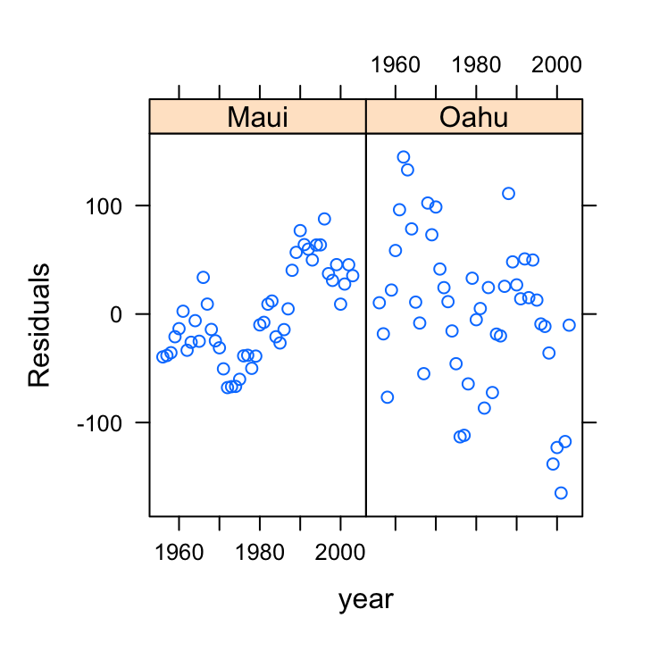

BI5302 Hawaiian birds case study practical
Alex Douglas
18 November, 2020
Setup global options for knitr package. Normally I wouldn’t display these but I’ll leave them here for your information. The arguments width.cutoff and tidy = TRUE keeps the displayed code within the code boxes (see what happens if you omit this).
knitr::opts_chunk$set(echo=TRUE,tidy.opts=list(width.cutoff=55),tidy=TRUE)
These data were collected from bird surveys conducted on two Hawaiian islands (Maui and Oahu) from 1956 - 2003. The annual abundance of black-necked stilts (Himantopus mexicanus knudseni) was measured each winter using transect surveys on each island. Along with bird counts, annual rainfall data for the region was also obtained from the National Climate Data Center. The researchers were interested in understanding whether levels of rainfall impacted on bird abundance and whether any impact was different between the two islands.
1. Create a new R markdown document in your BI5302 RStudio project and save it using a suitable file name. I suggest you specify the default output format as html but feel free to experiment with pdf (you can always change this later). Use this R markdown document to record your data exploration, statistical analysis (including graphs and tables) and commentary. For this exercise I would also suggest that you embed your R code as visible chunks within the document (use echo = TRUE) for later reference.
Import all the packages required for this exercise:
library(lattice)
library(car)
library(nlme)
library(effects)
2. Import the hawaii3.txt dataset into R and assign it to a suitably named variable. Remember if you’re using R version > 4.0.0 (most of you will be) then columns containing character strings will be imported into R as character type variables not as factors by default. You can either use the argument stringsAsFactors = TRUE when you use the read.table() function to automatically convert character type variables to factors when you import your data or you can use the read.table() function without the stringsAsFactors = TRUE argument and then covert them after you import your data. Examine the structure of the dataframe.
dataf <- read.table("data/hawaii3.txt", header = TRUE, stringsAsFactors = TRUE)
str(dataf)
## 'data.frame': 96 obs. of 4 variables:
## $ abund : int 220 151 183 161 264 192 117 239 263 128 ...
## $ rainfall: num 33.1 12.5 22.2 11.8 41.6 15.6 4.5 40.1 42.1 7.6 ...
## $ year : int 1956 1957 1958 1959 1960 1961 1962 1963 1964 1965 ...
## $ location: Factor w/ 2 levels "Maui","Oahu": 1 1 1 1 1 1 1 1 1 1 ...
3. How many observations are there for each island?
library(knitr)
kable(table(dataf$location))| Var1 | Freq |
|---|---|
| Maui | 48 |
| Oahu | 48 |
4. Explore these data graphically. Are there any obvious outliers in the abund variable for each of the locations variable levels (perhaps the dotchart() function with the group argument might help)? Next, use an xyplot (from the lattice package) or a coplot to explore any relationships between bird abundance and rainfall for each of the two islands Finally, create a plot to examine how bird abundance changes over time (year) for each of the two islands.
dotchart(dataf$abund, groups = dataf$location, col = as.numeric(dataf$location),
xlab = "Bird abundance", ylab = "Order of observations")
There doesn’t appear to be any obvious outliers in the abund variable for each island. However this plot does indicate that the ‘spread’ of bird abundance values is much greater for Oahu than for Maui. Hopefully, our linear model will be able to account for this.
xyplot(abund ~ rainfall | location, data = dataf, ylab = "bird abundance")
There appears to be a positive relationship between bird abundance and rainfall. The relationship seems to be more apparent for Maui compared to Oahu.
Now let’s take a look at the change in bird abundance over time on each island.
xyplot(abund ~ year | location, data = dataf, ylim = c(0,
800), ylab = "bird abundance")
Looks like there may be a small decrease in bird abundance for birds sampled on Maui. The decrease on Oahu looks to be more apparent although there seems to be quite a lot of between year variability.
5. With reference to the study aims stated above, fit an appropriate linear model to these data using the lm() function.
So lets fit a linear model to explain the variability in bird abundance by rainfall and location. We’ll also include the interaction term between rainfall and location to see if any relationship is different between the two islands. I have also included the year variable as an additive effect as I want to try to account for the fact that these observations are potentially non-independent.
birds_lm <- lm(abund ~ rainfall + location + year + rainfall:location,
data = dataf)
6. Use appropriate residual plots to identify whether the modelling assumptions are met. Don’t forget to also plot the residuals from this model against all explanatory variables (including year). Can you see a problem? Can you assume homogeneity of variance of the residuals from your model? If not, then try to identify the cause of this problem. Make sure you describe and discuss this process in your R markdown document.
Let’s plot the usual model validation plots by plotting the model object.
par(mfrow = c(2, 2))
plot(birds_lm)
From the Residuals vs Fitted and Scale-Location plots (left-hand side) there seems to be a hint of heterogeneity of variance. On the Residuals vs Fitted plot the spread of the residuals is narrower for smaller fitted values compared to larger fitted values resulting in a slight fan shaped pattern. The QQ-plot suggests that the residuals are approximately normally distributed. The residuals vs leverage plot indicates that none of our residuals are unusual or influential. Looks good so far!
So, to investigate the issue of heterogeneity of variance further let’s plot our residuals against each explanatory variable. First we can plot the residuals from our linear model against the location variable.
plot(resid(birds_lm) ~ dataf$location, xlab = "location",
ylab = "Residuals")
abline(h = 0, lty = 2, col = 2)
There are clear differences in the residual variance between each of the islands. Oahu has a much wider spread in residuals compared to Maui indicating a heterogeneity of variance associated with location.
We should also plot the residuals from our model against the rainfall explanatory variable.
plot(resid(birds_lm) ~ dataf$rainfall, xlab = "rainfall",
ylab = "Residuals")
abline(h = 0, lty = 2, col = 2)
Not a huge amount to worry about here. There doesn’t seem to be any heterogeneity of variance associated with the rainfall variable. Let’s be extra cautious though and plot the residuals from our model against the rainfall variable again but separately for each island.
xyplot(resid(birds_lm) ~ rainfall | location, data = dataf,
xlab = "rainfall", ylab = "Residuals")
So the residuals look OK. We can still see that there is a different spread of our residuals between location which we picked up in our previous diagnostic plot.
Also, don’t forget we need to check the independence of residuals assumptions as these data were collected from both islands each year from 1956 - 2003. The best way to do this is to plot the residuals against the year variable for each island (location).
xyplot(resid(birds_lm) ~ year | location, data = dataf,
xlab = "year", ylab = "Residuals")
Oh dear, there are clear patterns in our residuals over time indicating issues with non-independence. The pattern is perhaps strongest for Maui but there also appears to be a downward trend in our residuals for Oahu.
So for this dataset and our simple linear model, we cannot assume that our residuals have equal variance, probably due to differences between Oahu and Maui, and that our residuals are not independent. In other words, we need to go and fit a model that takes both of these factors into account. We’ll fit this type of model during week 3 of the course.
###Session Information
sessionInfo()## R version 4.0.3 (2020-10-10)
## Platform: x86_64-apple-darwin17.0 (64-bit)
## Running under: macOS Catalina 10.15.7
##
## Matrix products: default
## BLAS: /System/Library/Frameworks/Accelerate.framework/Versions/A/Frameworks/vecLib.framework/Versions/A/libBLAS.dylib
## LAPACK: /Library/Frameworks/R.framework/Versions/4.0/Resources/lib/libRlapack.dylib
##
## locale:
## [1] en_GB.UTF-8/en_GB.UTF-8/en_GB.UTF-8/C/en_GB.UTF-8/en_GB.UTF-8
##
## attached base packages:
## [1] stats graphics grDevices utils datasets methods base
##
## other attached packages:
## [1] kableExtra_1.3.1 pander_0.6.3 htmltools_0.5.0 AICcmodavg_2.3-1 stringr_1.4.0 dplyr_1.0.2
## [7] knitr_1.30 car_3.0-10 rms_6.0-1 SparseM_1.78 Hmisc_4.4-1 Formula_1.2-4
## [13] survival_3.2-7 lattice_0.20-41 ggplot2_3.3.2 effects_4.2-0 carData_3.0-4 nlme_3.1-150
##
## loaded via a namespace (and not attached):
## [1] TH.data_1.0-10 VGAM_1.1-4 minqa_1.2.4 colorspace_1.4-1 ellipsis_0.3.1
## [6] rio_0.5.16 rsconnect_0.8.16 estimability_1.3 htmlTable_2.1.0 base64enc_0.1-3
## [11] rstudioapi_0.11 farver_2.0.3 MatrixModels_0.4-1 fansi_0.4.1 mvtnorm_1.1-1
## [16] xml2_1.3.2 codetools_0.2-18 splines_4.0.3 nloptr_1.2.2.2 cluster_2.1.0
## [21] png_0.1-7 httr_1.4.2 compiler_4.0.3 backports_1.2.0 assertthat_0.2.1
## [26] Matrix_1.2-18 survey_4.0 cli_2.1.0 formatR_1.7 quantreg_5.75
## [31] tools_4.0.3 gtable_0.3.0 glue_1.4.2 tinytex_0.27 Rcpp_1.0.5
## [36] cellranger_1.1.0 raster_3.3-13 vctrs_0.3.4 conquer_1.0.2 insight_0.10.0
## [41] xfun_0.19 rvest_0.3.6 openxlsx_4.2.3 lme4_1.1-25 lifecycle_0.2.0
## [46] statmod_1.4.35 polspline_1.1.19 MASS_7.3-53 zoo_1.8-8 scales_1.1.1
## [51] hms_0.5.3 parallel_4.0.3 sandwich_3.0-0 RColorBrewer_1.1-2 yaml_2.2.1
## [56] curl_4.3 gridExtra_2.3 rpart_4.1-15 latticeExtra_0.6-29 stringi_1.5.3
## [61] highr_0.8 checkmate_2.0.0 boot_1.3-25 zip_2.1.1 rlang_0.4.8
## [66] pkgconfig_2.0.3 matrixStats_0.57.0 evaluate_0.14 purrr_0.3.4 htmlwidgets_1.5.2
## [71] labeling_0.4.2 tidyselect_1.1.0 plyr_1.8.6 magrittr_1.5 R6_2.5.0
## [76] generics_0.1.0 multcomp_1.4-14 DBI_1.1.0 pillar_1.4.6 haven_2.3.1
## [81] foreign_0.8-80 withr_2.3.0 abind_1.4-5 sp_1.4-4 nnet_7.3-14
## [86] tibble_3.0.4 crayon_1.3.4 rmarkdown_2.5 jpeg_0.1-8.1 grid_4.0.3
## [91] readxl_1.3.1 data.table_1.13.2 forcats_0.5.0 webshot_0.5.2 digest_0.6.27
## [96] xtable_1.8-4 stats4_4.0.3 munsell_0.5.0 unmarked_1.0.1 viridisLite_0.3.0
## [101] mitools_2.4